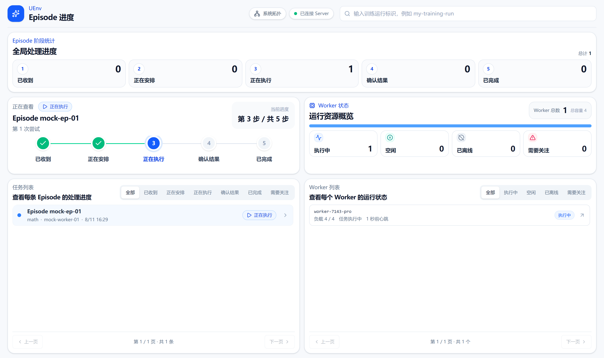

VeRL / ROLL / NexRL
UEnv 大模型后训练、评测、 轨迹采集一体化 仿真环境服务系统
用户或训练框架提交任务数据，并选择环境、智能体、工具、评分规则和模型服务。UEnv 负责准备组件与数据、调度 Worker、在隔离环境中运行任务，并返回回答、评分、交互轨迹和关联文件。
uenv-server
uenv-worker
uenv-hub
Workers online8 / 8
Queue statushealthy
TransportgRPC
把每条任务可靠地运行起来，供评测、训练和轨迹采集复用
让训练与评测框架专注算法，让环境系统专注可靠执行。UEnv 通过标准协议屏蔽底层运行差异。
训练框架无关
训练框架接管任务数据后，直接转换为 UEnv Server 接入的标准数据包，避免环境逻辑与训练代码重复耦合。
standard packets
EpisodeRequest → EpisodeResult弹性 Worker Pool
通过注册、心跳、调度与结果上报组织执行资源，支持环境实例预热和并行 Episode 执行。
插件化环境运行时
环境以独立插件进程运行，通过本地协议完成 reset、step、close 与健康检查。
全链路可观测
围绕 run、worker、environment、episode 和 step 组织状态，让异常定位与运行分析更直接。
面向大规模多步交互
控制面与执行面分离，推理服务由 Worker 直接访问，减少中心节点数据转发压力。
从训练请求到环境结果，路径清晰可控
用户或训练框架通过 UEnv Bridge 提交任务，UEnv Server 调度 UEnv Worker 执行；UEnv Hub 管理与分发数据集、智能体和工具包。
查看系统架构 ↗全流程可观测
Episode 全局进度、单条任务阶段步进、Worker 资源概览与列表，快速定位卡点和失败分支。

启动 UEnv 核心服务
准备匹配版本的发行包，部署 UEnv Hub、UEnv Server 与 UEnv Worker，再检查服务状态并运行首次评测。
01 准备发布包
02 一键安装
03 验证服务
04 确认 Worker 注册
查看完整部署指南 ↗
让评测、后训练与轨迹采集更模块化、更可扩展。
从使用文档开始接入，或前往 GitHub 查看源码与当前实现进展。